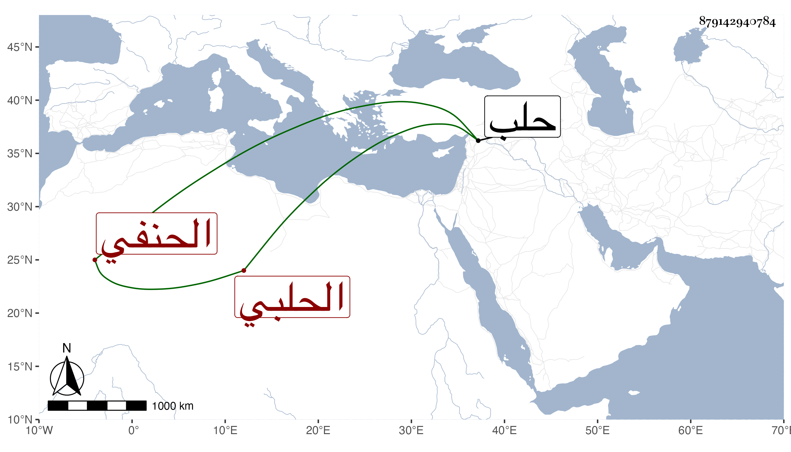

0902Sakhawi.DawLamic.ITO20230111-ara1.EIS1600.879142940784
Biography ID: 879142940784
44
علي بن محمد بن محمد بن محمود بن غازي العلاء أبو الحسن بن الكمال الحلبي الحنفي أخو المحب أبي الوليد وعبد الرحمن ويعرف كسلفه بابن الشحنة . ولد سنة ست وخمسين وسبعمائة وحفظ القرآن والمختار وأخذ عن أبيه وأخيه المحب وناب عنهما واستقل بقضاء الغربيات العشرة من معاملات حلب ، وكان فاضلا له نظم من أحسنه ما أنشدنيه ابن أخيه المحب أبو الفضل عنه :
| وقط كليث كامل الحسن صائد | وفي عزمه واللون يشبه عنترا |
| يفوق على قط الزياد تفضلا | وسميته من نشره المسك عنبرا |
وقوله مما نفذ ابن أخيه وصيته بإلقائهما معه في قبره :
| إلهي قد نزلت بضيق لحد | بأوزار ثقال مع عيوب |
| وعفوك واسع وحماك حصن | وأنت الله غفار الذنوب |
قال ومن العجيب كونه لم يكن يلحن مع عدم اشتغاله بالعربية ولكنه كان يحكي أنه رأى النبي صلى الله عليه وسلم وسأله في إصلاح لسانه فأطعمه حلوى عجمية فكان لا يخطئ العربية . مات في سنة إحدى وثلاثين .
